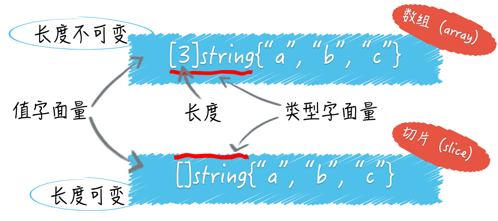
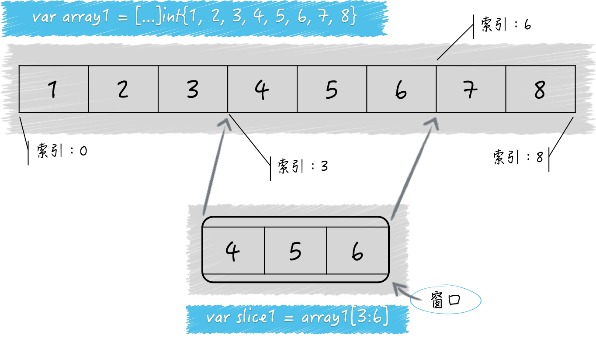

- 00 导读 写给0基础入门的Go语言学习者.md.html
- 00 导读 学习专栏的正确姿势.md.html
- 00 开篇词 跟着学，你也能成为Go语言高手.md.html
- 01 工作区和GOPATH.md.html
- 02 命令源码文件.md.html
- 03 库源码文件.md.html
- 04 程序实体的那些事儿（上）.md.html
- 05 程序实体的那些事儿（中）.md.html
- 06 程序实体的那些事儿 （下）.md.html
- 07 数组和切片.md.html
- 08 container包中的那些容器.md.html
- 09 字典的操作和约束.md.html
- 10 通道的基本操作.md.html
- 11 通道的高级玩法.md.html
- 12 使用函数的正确姿势.md.html
- 13 结构体及其方法的使用法门.md.html
- 14 接口类型的合理运用.md.html
- 15 关于指针的有限操作.md.html
- 16 go语句及其执行规则（上）.md.html
- 17 go语句及其执行规则（下）.md.html
- 18 if语句、for语句和switch语句.md.html
- 19 错误处理（上）.md.html
- 20 错误处理 （下）.md.html
- 21 panic函数、recover函数以及defer语句 （上）.md.html
- 22 panic函数、recover函数以及defer语句（下）.md.html
- 23 测试的基本规则和流程 （上）.md.html
- 24 测试的基本规则和流程（下）.md.html
- 25 更多的测试手法.md.html
- 26 sync.Mutex与sync.RWMutex.md.html
- 27 条件变量sync.Cond （上）.md.html
- 28 条件变量sync.Cond （下）.md.html
- 29 原子操作（上）.md.html
- 30 原子操作（下）.md.html
- 31 sync.WaitGroup和sync.Once.md.html
- 32 context.Context类型.md.html
- 33 临时对象池sync.Pool.md.html
- 34 并发安全字典sync.Map （上）.md.html
- 35 并发安全字典sync.Map (下).md.html
- 36 unicode与字符编码.md.html
- 37 strings包与字符串操作.md.html
- 38 bytes包与字节串操作（上）.md.html
- 39 bytes包与字节串操作（下）.md.html
- 40 io包中的接口和工具 （上）.md.html
- 41 io包中的接口和工具 （下）.md.html
- 42 bufio包中的数据类型 （上）.md.html
- 43 bufio包中的数据类型（下）.md.html
- 44 使用os包中的API （上）.md.html
- 45 使用os包中的API （下）.md.html
- 46 访问网络服务.md.html
- 47 基于HTTP协议的网络服务.md.html
- 48 程序性能分析基础（上）.md.html
- 49 程序性能分析基础（下）.md.html
- 尾声 愿你披荆斩棘，所向无敌.md.html
- 新年彩蛋 完整版思考题答案.md.html
- 捐赠
07 数组和切片
从本篇文章开始，我们正式进入了模块2的学习。在这之前，我们已经聊了很多的Go语言和编程方面的基础知识，相信你已经对Go语言的开发环境配置、常用源码文件写法，以及程序实体（尤其是变量）及其相关的各种概念和编程技巧（比如类型推断、变量重声明、可重名变量、类型断言、类型转换、别名类型和潜在类型等）都有了一定的理解。
它们都是我认为的Go语言编程基础中比较重要的部分，同时也是后续文章的基石。如果你在后面的学习过程中感觉有些吃力，那可能是基础仍未牢固，可以再回去复习一下。
我们这次主要讨论Go语言的数组（array）类型和切片（slice）类型。数组和切片有时候会让初学者感到困惑。
它们的共同点是都属于集合类的类型，并且，它们的值也都可以用来存储某一种类型的值（或者说元素）。
不过，它们最重要的不同是：数组类型的值（以下简称数组）的长度是固定的，而切片类型的值（以下简称切片）是可变长的。
数组的长度在声明它的时候就必须给定，并且之后不会再改变。可以说，数组的长度是其类型的一部分。比如，[1]string和[2]string就是两个不同的数组类型。
而切片的类型字面量中只有元素的类型，而没有长度。切片的长度可以自动地随着其中元素数量的增长而增长，但不会随着元素数量的减少而减小。

（数组与切片的字面量）
我们其实可以把切片看做是对数组的一层简单的封装，因为在每个切片的底层数据结构中，一定会包含一个数组。数组可以被叫做切片的底层数组，而切片也可以被看作是对数组的某个连续片段的引用。
也正因为如此，Go语言的切片类型属于引用类型，同属引用类型的还有字典类型、通道类型、函数类型等；而Go语言的数组类型则属于值类型，同属值类型的有基础数据类型以及结构体类型。
注意，Go语言里不存在像Java等编程语言中令人困惑的“传值或传引用”问题。在Go语言中，我们判断所谓的“传值”或者“传引用”只要看被传递的值的类型就好了。
如果传递的值是引用类型的，那么就是“传引用”。如果传递的值是值类型的，那么就是“传值”。从传递成本的角度讲，引用类型的值往往要比值类型的值低很多。
我们在数组和切片之上都可以应用索引表达式，得到的都会是某个元素。我们在它们之上也都可以应用切片表达式，也都会得到一个新的切片。
我们通过调用内建函数len，得到数组和切片的长度。通过调用内建函数cap，我们可以得到它们的容量。
但要注意，数组的容量永远等于其长度，都是不可变的。切片的容量却不是这样，并且它的变化是有规律可寻的。
下面我们就通过一道题来了解一下。我们今天的问题就是：怎样正确估算切片的长度和容量？
为此，我编写了一个简单的命令源码文件demo15.go。
package main
import "fmt"
func main() {
// 示例1。
s1 := make([]int, 5)
fmt.Printf("The length of s1: %d\n", len(s1))
fmt.Printf("The capacity of s1: %d\n", cap(s1))
fmt.Printf("The value of s1: %d\n", s1)
s2 := make([]int, 5, 8)
fmt.Printf("The length of s2: %d\n", len(s2))
fmt.Printf("The capacity of s2: %d\n", cap(s2))
fmt.Printf("The value of s2: %d\n", s2)
}
我描述一下它所做的事情。
首先，我用内建函数make声明了一个[]int类型的变量s1。我传给make函数的第二个参数是5，从而指明了该切片的长度。我用几乎同样的方式声明了切片s2，只不过多传入了一个参数8以指明该切片的容量。
现在，具体的问题是：切片s1和s2的容量都是多少？
这道题的典型回答：切片s1和s2的容量分别是5和8。
问题解析
解析一下这道题。s1的容量为什么是5呢？因为我在声明s1的时候把它的长度设置成了5。当我们用make函数初始化切片时，如果不指明其容量，那么它就会和长度一致。如果在初始化时指明了容量，那么切片的实际容量也就是它了。这也正是s2的容量是8的原因。
我们顺便通过s2再来明确下长度、容量以及它们的关系。我在初始化s2代表的切片时，同时也指定了它的长度和容量。
我在刚才说过，可以把切片看做是对数组的一层简单的封装，因为在每个切片的底层数据结构中，一定会包含一个数组。数组可以被叫做切片的底层数组，而切片也可以被看作是对数组的某个连续片段的引用。
在这种情况下，切片的容量实际上代表了它的底层数组的长度，这里是8。（注意，切片的底层数组等同于我们前面讲到的数组，其长度不可变。）
现在你需要跟着我一起想象：有一个窗口，你可以通过这个窗口看到一个数组，但是不一定能看到该数组中的所有元素，有时候只能看到连续的一部分元素。
现在，这个数组就是切片s2的底层数组，而这个窗口就是切片s2本身。s2的长度实际上指明的就是这个窗口的宽度，决定了你透过s2，可以看到其底层数组中的哪几个连续的元素。
由于s2的长度是5，所以你可以看到底层数组中的第1个元素到第5个元素，对应的底层数组的索引范围是[0, 4]。
切片代表的窗口也会被划分成一个一个的小格子，就像我们家里的窗户那样。每个小格子都对应着其底层数组中的某一个元素。
我们继续拿s2为例，这个窗口最左边的那个小格子对应的正好是其底层数组中的第一个元素，即索引为0的那个元素。因此可以说，s2中的索引从0到4所指向的元素恰恰就是其底层数组中索引从0到4代表的那5个元素。
请记住，当我们用make函数或切片值字面量（比如[]int{1, 2, 3}）初始化一个切片时，该窗口最左边的那个小格子总是会对应其底层数组中的第1个元素。
但是当我们通过切片表达式基于某个数组或切片生成新切片的时候，情况就变得复杂起来了。
我们再来看一个例子：
s3 := []int{1, 2, 3, 4, 5, 6, 7, 8}
s4 := s3[3:6]
fmt.Printf("The length of s4: %d\n", len(s4))
fmt.Printf("The capacity of s4: %d\n", cap(s4))
fmt.Printf("The value of s4: %d\n", s4)
切片s3中有8个元素，分别是从1到8的整数。s3的长度和容量都是8。然后，我用切片表达式s3[3:6]初始化了切片s4。问题是，这个s4的长度和容量分别是多少？
这并不难，用减法就可以搞定。首先你要知道，切片表达式中的方括号里的那两个整数都代表什么。我换一种表达方式你也许就清楚了，即：[3, 6)。
这是数学中的区间表示法，常用于表示取值范围，我其实已经在本专栏用过好几次了。由此可知，[3:6]要表达的就是透过新窗口能看到的s3中元素的索引范围是从3到5（注意，不包括6）。
这里的3可被称为起始索引，6可被称为结束索引。那么s4的长度就是6减去3，即3。因此可以说，s4中的索引从0到2指向的元素对应的是s3及其底层数组中索引从3到5的那3个元素。

（切片与数组的关系）
再来看容量。我在前面说过，切片的容量代表了它的底层数组的长度，但这仅限于使用make函数或者切片值字面量初始化切片的情况。
更通用的规则是：一个切片的容量可以被看作是透过这个窗口最多可以看到的底层数组中元素的个数。
由于s4是通过在s3上施加切片操作得来的，所以s3的底层数组就是s4的底层数组。
又因为，在底层数组不变的情况下，切片代表的窗口可以向右扩展，直至其底层数组的末尾。
所以，s4的容量就是其底层数组的长度8,减去上述切片表达式中的那个起始索引3，即5。
注意，切片代表的窗口是无法向左扩展的。也就是说，我们永远无法透过s4看到s3中最左边的那3个元素。
最后，顺便提一下把切片的窗口向右扩展到最大的方法。对于s4来说，切片表达式s4[0:cap(s4)]就可以做到。我想你应该能看懂。该表达式的结果值（即一个新的切片）会是[]int{4, 5, 6, 7, 8}，其长度和容量都是5。
知识扩展
问题1：怎样估算切片容量的增长？
一旦一个切片无法容纳更多的元素，Go语言就会想办法扩容。但它并不会改变原来的切片，而是会生成一个容量更大的切片，然后将把原有的元素和新元素一并拷贝到新切片中。在一般的情况下，你可以简单地认为新切片的容量（以下简称新容量）将会是原切片容量（以下简称原容量）的2倍。
但是，当原切片的长度（以下简称原长度）大于或等于1024时，Go语言将会以原容量的1.25倍作为新容量的基准（以下新容量基准）。新容量基准会被调整（不断地与1.25相乘），直到结果不小于原长度与要追加的元素数量之和（以下简称新长度）。最终，新容量往往会比新长度大一些，当然，相等也是可能的。
另外，如果我们一次追加的元素过多，以至于使新长度比原容量的2倍还要大，那么新容量就会以新长度为基准。注意，与前面那种情况一样，最终的新容量在很多时候都要比新容量基准更大一些。更多细节可参见runtime包中slice.go文件里的growslice及相关函数的具体实现。
我把展示上述扩容策略的一些例子都放到了demo16.go文件中。你可以去试运行看看。
问题 2：切片的底层数组什么时候会被替换？
确切地说，一个切片的底层数组永远不会被替换。为什么？虽然在扩容的时候Go语言一定会生成新的底层数组，但是它也同时生成了新的切片。
它只是把新的切片作为了新底层数组的窗口，而没有对原切片，及其底层数组做任何改动。
请记住，在无需扩容时，append函数返回的是指向原底层数组的原切片，而在需要扩容时，append函数返回的是指向新底层数组的新切片。所以，严格来讲，“扩容”这个词用在这里虽然形象但并不合适。不过鉴于这种称呼已经用得很广泛了，我们也没必要另找新词了。
顺便说一下，只要新长度不会超过切片的原容量，那么使用append函数对其追加元素的时候就不会引起扩容。这只会使紧邻切片窗口右边的（底层数组中的）元素被新的元素替换掉。你可以运行demo17.go文件以增强对这些知识的理解。
总结
总结一下，我们今天一起探讨了数组和切片以及它们之间的关系。切片是基于数组的，可变长的，并且非常轻快。一个切片的容量总是固定的，而且一个切片也只会与某一个底层数组绑定在一起。
此外，切片的容量总会是在切片长度和底层数组长度之间的某一个值，并且还与切片窗口最左边对应的元素在底层数组中的位置有关系。那两个分别用减法计算切片长度和容量的方法你一定要记住。
另外，如果新的长度比原有切片的容量还要大，那么底层数组就一定会是新的，而且append函数也会返回一个新的切片。还有，你其实不必太在意切片“扩容”策略中的一些细节，只要能够理解它的基本规律并可以进行近似的估算就可以了。
思考题
这里仍然是聚焦于切片的问题。
- 如果有多个切片指向了同一个底层数组，那么你认为应该注意些什么？
- 怎样沿用“扩容”的思想对切片进行“缩容”？请写出代码。
这两个问题都是开放性的，你需要认真思考一下。最好在动脑的同时动动手。
© 2019 - 2023 Liangliang Lee. Powered by gin and hexo-theme-book.